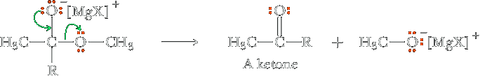
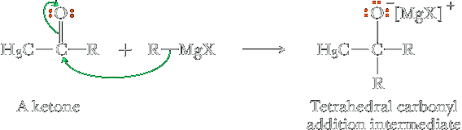
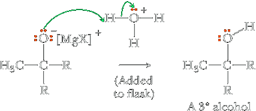

Reactions of the carbonyl group with Organometallic Compounds
Reaction of an Ester with a Grignard Reagent
Treating a formic ester with a Grignard reagent followed by hydrolysis gives a secondary alcohol. Treating any other ester with a Grignard reagent gives a tertiary alcohol. The mechanism involves nucleophilic attack of the Grignard reagent on the carbonyl carbon atom to give a tetrahedral addition intermediate, which collapses with the departure of alkoxide ion to give a ketone intermediate (an aldehyde in the case of formate esters), which reacts with a second mole of Grignard reagent.
Step 1: Make a new bond between a nucleophile and an electrophile. The reaction begins with addition of one mole of Grignard reagent to the carbonyl carbon to form a tetrahedral carbonyl addition intermediate.

Step 2: Break a bond to give stable molecules or ions. Because an alkoxide ion is a moderately good leaving group from a tetrahedral carbonyl addition intermediate, this intermediate collapses to give a ketone and a magnesium alkoxide salt. To this point in the mechanism, we have nucleophilic acyl substitution.
Step 3: Make a new bond between a nucleophile and an electrophile. The ketone reacts with a second mole of Grignard reagent to form a second tetrahedral carbonyl addition compound.
Step 4: Add a proton. The chemist adds aqueous acid to the reaction, and the resulting hydrolysis gives a tertiary alcohol. These last two steps constitute nucleophilic acyl addition.
Organolithium Compounds
Organolithium compounds are even more powerful nucleophiles than Grignard reagents and react with esters to give the same types of secondary and tertiary alcohols as shown for Grignard reagents, often in higher yields.